合并图的应用
目标
1. 掌握 Analysis 合并图表方式
一、为什么要合并图表
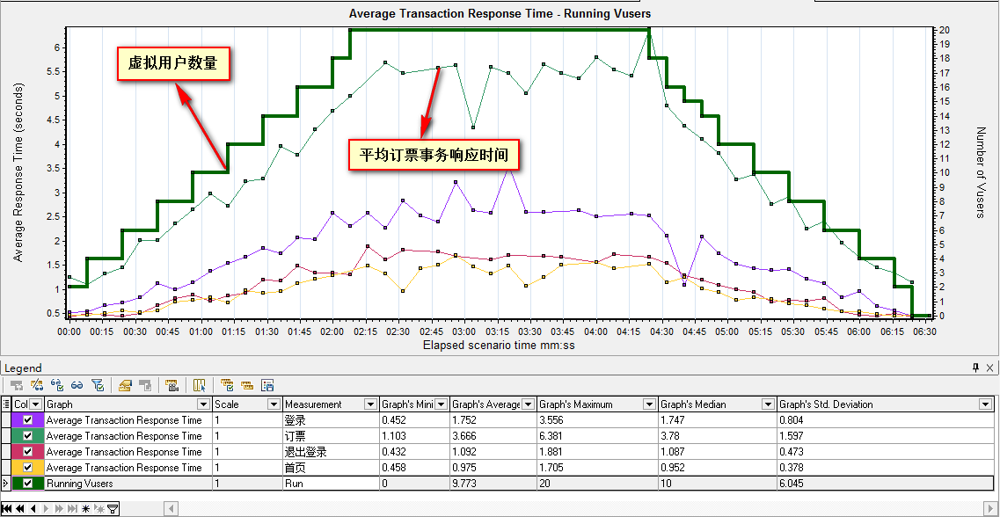
说明：合并图表是为了更好的定位系统瓶颈，比如把虚拟用户运行图和平均响应事务时间合并，能直观体现虚拟用户数量
对服务器处理事务产生的影响；
案例
说明：为了更好的学习合并图方式，我们使用订票脚本，设计个场景，场景需求设置：
设置：
1). 虚拟用户数20；
2). 场景模式 + 基本计划
3). 虚拟用户启动15秒启动2个，结束与启动相同；
4). 持续时间为2分钟。
二、Analysis合并图
1. Running Vusers(虚拟运行用户)
2. Average Transaction Response Time(平均事务响应时间)
说明：在合并之前，我们先拿两张图来演示
1). Running Vusers(虚拟运行用户)
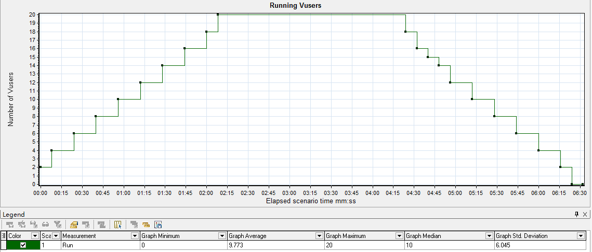
2). Average Transaction Response Time(平均事务响应时间)
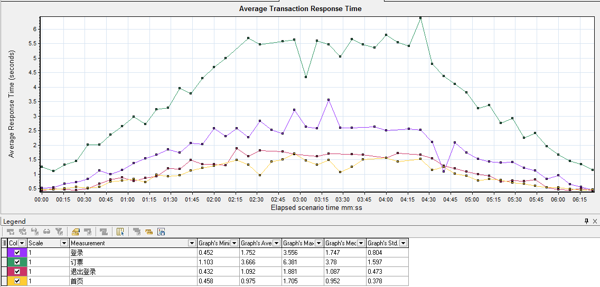
2.1 合并图操作说明
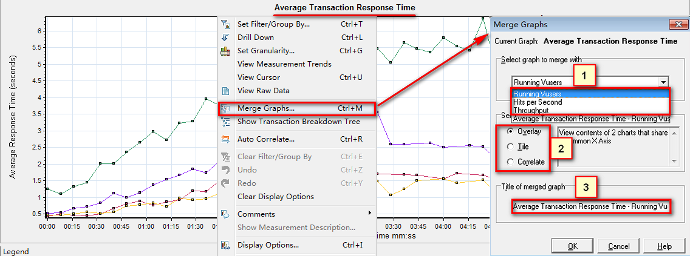
操作说明：
1). 打开合并选项菜单 (Ctrl + M 或者 在要合并的图表上点击鼠标右键 -> Merge Graphs)
2). 标1：选择要合并的图(并入) 如：Running Vusers
3). 标2：选择合并的方式：
(1). Overlay(叠加)
(2). Tile(平铺)
(3). Correlate(关联)
2.2 合并方式-Overlay(叠加)
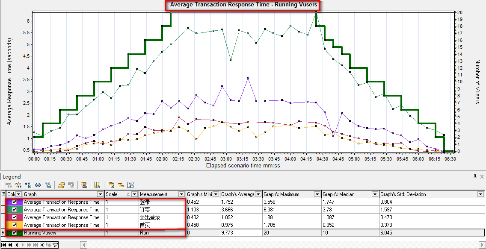
说明：两个图使用相同的X轴，并入的图Y轴合并后在最右侧；
2.3 合并方式-Tile(平铺)
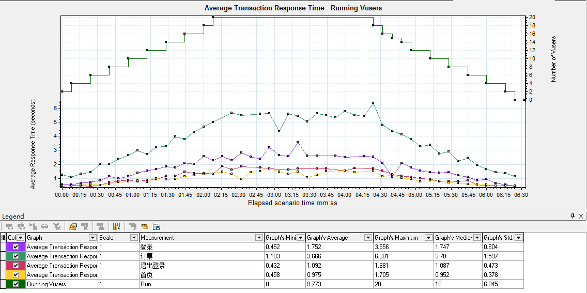
说明：两个图公用一个X轴，Y轴各自保持不变，并入图在上方；
2.4 合并方式-Correlate(关联)
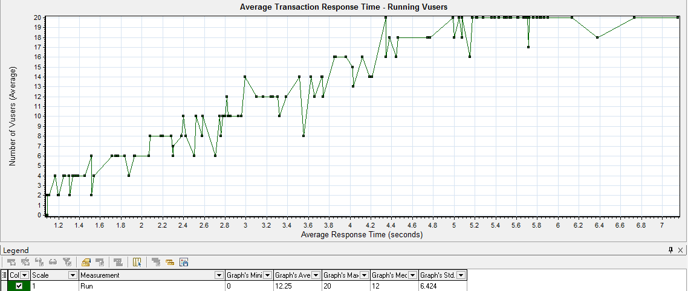
说明：
1. 主图的Y轴变成合并后的X轴，合并图的Y轴，为合并后的Y轴；
2. 合并的时候，需要把多余的线条给过滤掉，如：只留订票业务；
3. 以上图为例，合并后X轴为平均响应时间，Y轴为虚拟用户数；
提示：
在实际工作中，除了以上三种合并方式外，瓶颈分析还有一种方法-自动关联；
三、自关联应用
3.1 什么是自动关联？
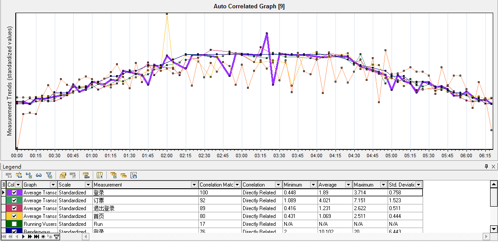
说明：LoadRunner使用统计信息算法去关联相似事务波段的指标，从而来定位某一瓶颈是由那些指标引起的；
3.2 自关联 关联对象-登录事务
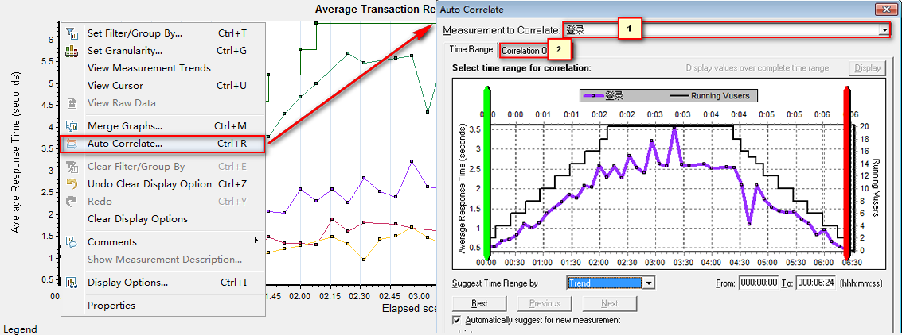
说明：
1. 可以选择指定关注的时间段；
2. 选项设置一般为默认；[Trend(趋势-默认)；Feature(相似)]
3.3 自关联 指定-匹配的度量指标
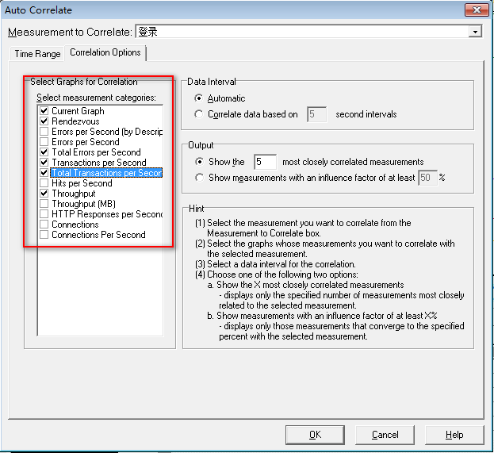
思考
在性能初期阶段需要了解那些表的合并？
四、常用合并图表组合 说明
1. 平均事务响应时间与虚拟运行用户
2. 平均事务响应时间与吞吐量
3. 每秒点击数与吞吐量
4. 每秒点击数与平均事务响应时间
4.1 平均事务响应时间与虚拟运行用户 合并图
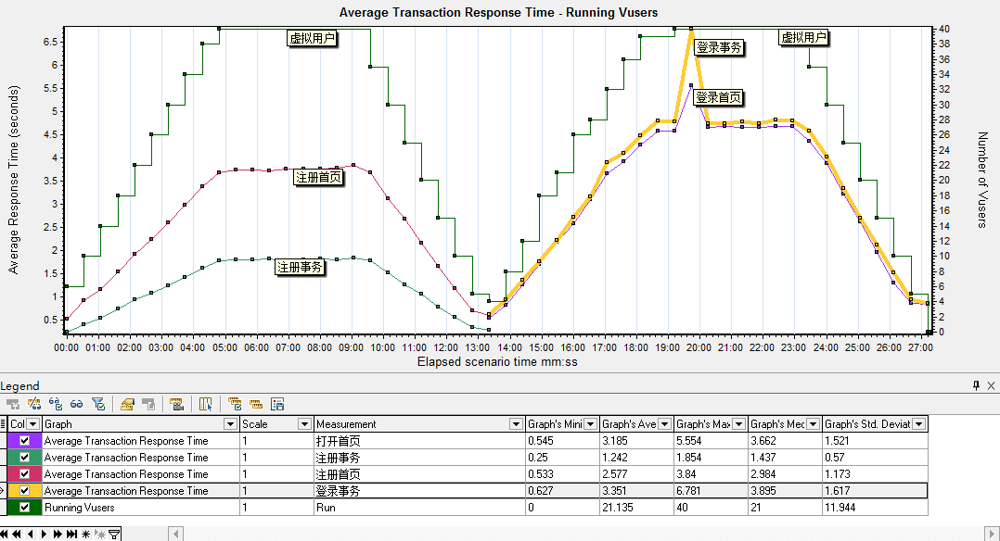
说明：平均事务时间和运行用户图合并能直观体现 虚拟用户数对不同事务的影响
分析：
1. 从上图看出，虚拟用户数对登录事务的影响明显高于注册事务；首先确定一点，
应用服务器对40用户并发请求处理是没有问题的。
2. 如果需求登录40并发<=3秒的话，需要进一步结合页面组件细分图及每秒点击率来分析
4.2 平均事务响应时间与吞吐量
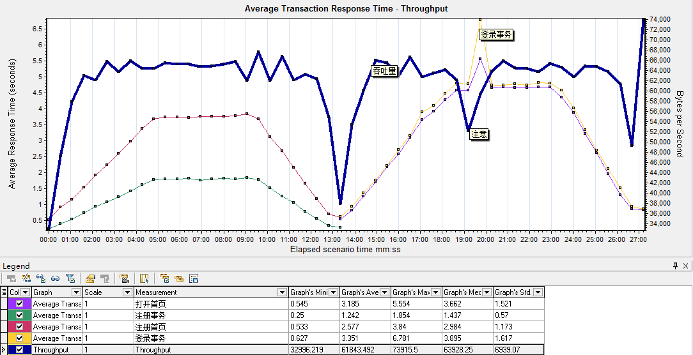
说明：平均事务响应时间与吞吐量结合，可以看出单个事务对吞吐量的影响
分析：
1. 从上图中看出，登录事务响应时间忽然拉长，系统吞吐量直线下降，说明，系统并不是因为总吞吐量的问题导致
登录响应延长，基本确定是登录资源或登录业务代码问题；
2. 具体是登录资源还是登录业务，需要结合页面组件细分图和每秒点击数来确定是哪个问题；
4.3 每秒点击数与吞吐量
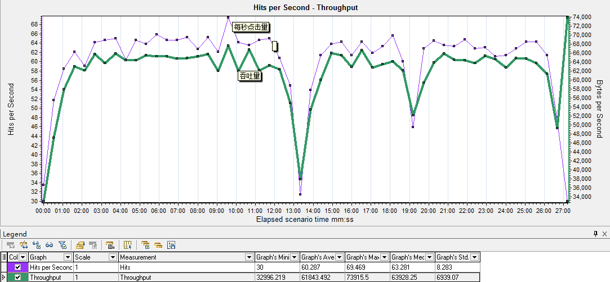
说明：正常情况下每秒点击率与吞吐量图形基本是一致的
分析：
1. 吞吐量不正常那么说明，应用程序响应时间慢
2. 点击量不正常那么说明，网络存在问题，需要检查网络相关报表
提示：一般测试不同配置服务器性能时，这两张图合并最好用；
4.4 每秒点击数与平均事务响应时间
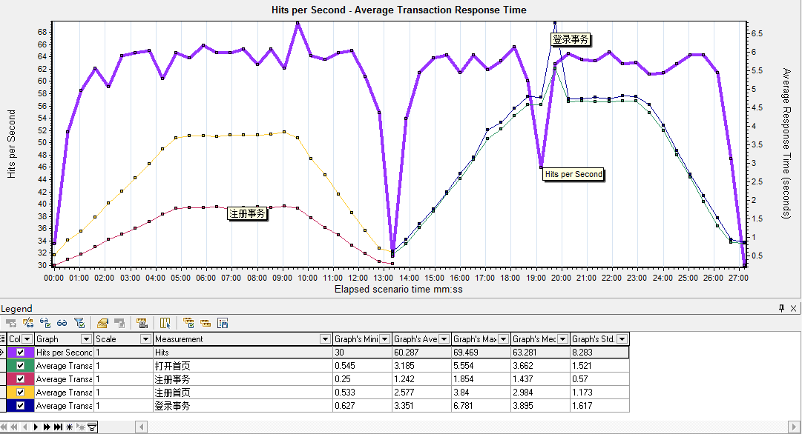
说明：查看每秒点击数对事务的影响
分析：
1. 每秒点击数对注册业务影响很小，注册业务最高每秒点击了69次
2. 每秒点次数对登录业务影响很大，登录业务有请求异常缓慢，需要结合页面组件细分表来确认是那个组件请求
总结
1. 为什么要用合并图
2. 合并图的三种方式